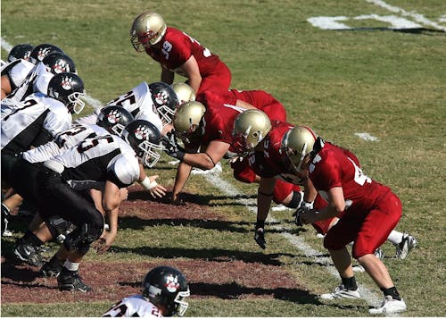

Campus Clubs
Our on-campus organizers and facilities offer a variety of sports, arts, humanities, and technology related clubs.
These clubs include:
- Soccer
- Football
- Track
- Painting
- Languages
- Music
- Computer Science
Football Club

The CCSU Football Club provides students with the opportunity to participate in a competitive sport against other intercollegiate teams. The Central Football Club offers students the space to practice and enhance their collegiate experience while developing a well-rounded education through physical and social leadership. In the Central Football Club, different levels of expereince are valued, whether you are a beginner or continueing your football passion. Learning how to play football helps develop hand-eye coordination and boosts student self-confidence.
Multi-Cultural Language Clubs
Our campus offers several language and culture focused clubs and organizations. Active on-campus groups include the Spanish Club, Polish Club, and Japanese Language Learning Club. The Latin American Student Organization and the Italian Resource Center also provide events focused on cultural immersion for students. Whether you're a beginner or experienced learner, the Multi-Cultural Language Programs on-campus offer great opportunities to learn languages and participate in diverse cultural experiences.
Music Club

The Central Music Club fosters the sharing of a love for music within the student body. Through different preforming ensembles, students can showcase thier own passion for music and participate in musical activities as a community. The Music Club is a student-led musical group that provides a space to practice and learn a variety of musical instruments alongside other passionate students.